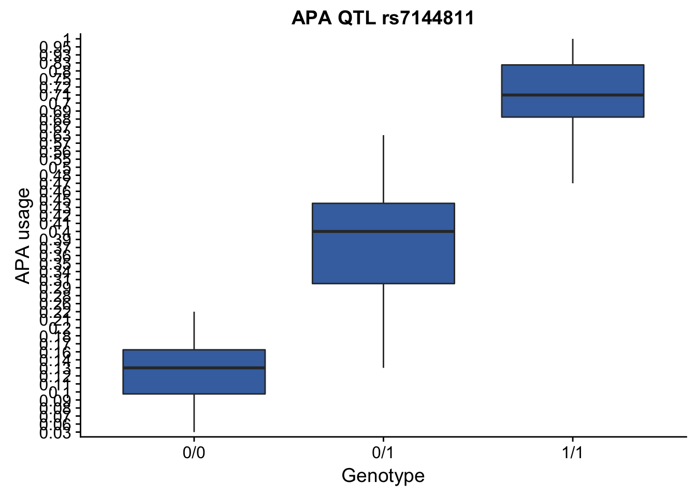

Explore the APA qtls from RNAseq
Briana Mittleman
2018-02-06
Last updated: 2018-02-12
Code version: 4e6265c
library("dplyr")
Attaching package: 'dplyr'The following objects are masked from 'package:stats':
filter, lagThe following objects are masked from 'package:base':
intersect, setdiff, setequal, unionlibrary("ggplot2")The goal of this analysis is to do some exploration on the APA qtls that Yang called on the LCL RNA-seq data.
Relevant files are in: /project2/gilad/yangili/LCLs
run_lm_APA.txt: APA QTLs. cols are: ensembl geneid, snpID, distance to target, pvalue, beta
qqnorm_APA_final.txt.gz : what went into the qtl mapping
DaPars_APA_geuvadis.txt : the “raw” APA usage
ensembl2refseq.txt : ensembl ids to the refseq ids
First step: Use deeptools to look at APA enrichment in some of the individuals This is the script for 18585. /project2/gilad/briana/apa_sites/rnaseq_LCL/heat_map18505.sh
#!/bin/bash
#SBATCH --job-name=deeptools_lcl
#SBATCH --time=8:00:00
#SBATCH --partition=gilad
#SBATCH --mem=16G
#SBATCH --mail-type=END
module load Anaconda3
source activate net-seq
bamCoverage -b /project2/gilad/yangili/LCLs/bams/RNAseqGeuvadis_STAR_18505.final.bam -o LCL_18505.bw
computeMatrix reference-point -S LCL_18505.bw -R /project2/gilad/briana/apa_sites/clusters.bed -b 1000 -a 1000 -out LCL_18505.gz
plotHeatmap --sortRegions --xAxisLabel 'APA' descend -m LCL_18505.gz -out LCL_18505.apa.pngNeed to index the bam files before I can run this
#!/bin/bash
#SBATCH --job-name=sort_bam
#SBATCH --time=8:00:00
#SBATCH --partition=gilad
#SBATCH --mem=16G
#SBATCH --mail-type=END
module load Anaconda3
source activate net-seq
sample=$1
describer=$(echo ${sample} | sed -e "s/\.bam$//")
#describer=$(echo ${sample} | sed 's/.bam//')
# Sort BAM file
samtools sort ${describer}.bam -o ${describer}.sort.bam
#!/bin/bash
#SBATCH --job-name=index_bams
#SBATCH --time=8:00:00
#SBATCH --partition=gilad
#SBATCH --mem=16G
#SBATCH --mail-type=END
module load Anaconda3
source activate net-seq
sample=$1
describer=$(echo ${sample} | sed 's/.bam//')
# index the bam file
samtools index ${describer}.bam
Run these 2 scripts for:
RNAseqGeuvadis_STAR_18505.final.bam
RNAseqGeuvadis_STAR_18486.final.bam
Now I can run the deeptools script:

APA enrichment in 18505 RNA seq
How to fix the TSS label!
–refPointLabel APA
Take a look at the QTL files:
#qtl file
APA_qtls=read.table("../data/run_lm_APA.txt", stringsAsFactors = FALSE)
names(APA_qtls)=c("gene", "snp", "distance", "pval", "beta")
#APA usage
APA_usage=read.table("../data/DaPars_APA_geuvadis.txt", stringsAsFactors = FALSE)
names(APA_usage)=c("#Chr", "start", "end", "ID", "NA18486", "NA18487","NA18488", "NA18489", "NA18498", "NA18499", "NA18502", "NA18505", "NA18508", "NA18510", "NA18511", "NA18517", "NA18519", "NA18520", "NA18858", "NA18861", "NA18867", "NA18868", "NA18870", "NA18873", "NA18907", "NA18909", "NA18910", "NA18912", "NA18916", "NA18917", "NA18923", "NA18933", "NA18934", 'NA19092', "NA19093", "NA19095", "NA19096", "NA19098", "NA19099", "NA19102", "NA19107", "NA19108", 'NA19113', 'NA19114', 'NA19116', 'NA19117', 'NA19118', 'NA19119', 'NA19121', 'NA19129', 'NA19130', 'NA19131', 'NA19137', 'NA19138', 'NA19141', 'NA19143', 'NA19144', 'NA19146', 'NA19147', 'NA19149', 'NA19150', 'NA19152', 'NA19153', 'NA19159', 'NA19160', 'NA19171', 'NA19172', 'NA19175', 'NA19184', 'NA19185', 'NA19189', 'NA19190', 'NA19197', 'NA19198', 'NA19200', 'NA19201', 'NA19204', 'NA19206', 'NA19207', 'NA19209', 'NA19210', 'NA19213', 'NA19214', 'NA19222', 'NA19223', 'NA19225', 'NA19235', 'NA19247', 'NA19248')
#gene IDs
ensenbl2refseq=read.delim("../data/ensembl2refseq.txt", stringsAsFactors = FALSE)To look at top QTLs I will sort by pval:
APA_qtls=arrange(APA_qtls, APA_qtls$pval )
top_QTL=APA_qtls[1,]
top_QTL gene snp distance pval beta
1 ENSG00000258289 rs7144811 -19710 2.10997e-37 1.322Find this gene in the ensenbl2refseq file:
ref_gene_top=ensenbl2refseq[which(grepl(top_QTL[1], ensenbl2refseq[,1])),]
ref_gene_top Ensembl.Gene.ID Ensembl.Transcript.ID
44380 ENSG00000258289 ENST00000552002
44396 ENSG00000258289 ENST00000549115
44407 ENSG00000258289 ENST00000548752
44422 ENSG00000258289 ENST00000551947
44427 ENSG00000258289 ENST00000556089
44438 ENSG00000258289 ENST00000551093
44443 ENSG00000258289 ENST00000547625
44454 ENSG00000258289 ENST00000359118
RefSeq.mRNA..e.g..NM_001195597.
44380 NM_145165
44396 NM_001204063
44407 NM_001204064
44422
44427
44438
44443
44454
RefSeq.mRNA.predicted..e.g..XM_001125684.
44380
44396
44407
44422
44427
44438
44443
44454 Find the APA usage line for this gene.
top_apa_usage=APA_usage[which(grepl("NM_001204064",APA_usage[,4])),]
top_apa_usage #Chr start end ID NA18486 NA18487
9370 chr14 65398856 65402084 NM_001204064|CHURC1|chr14|+ 0.17 0.63
NA18488 NA18489 NA18498 NA18499 NA18502 NA18505 NA18508 NA18510
9370 0.95 0.43 0.16 0.63 0.12 0.75 0.71 0.37
NA18511 NA18517 NA18519 NA18520 NA18858 NA18861 NA18867 NA18868
9370 0.09 0.03 0.1 1 0.2 0.8 0.18 0.69
NA18870 NA18873 NA18907 NA18909 NA18910 NA18912 NA18916 NA18917
9370 0.28 0.55 0.39 0.06 0.45 0.72 0.42 0.47
NA18923 NA18933 NA18934 NA19092 NA19093 NA19095 NA19096 NA19098
9370 0.41 0.28 0.71 0.21 0.07 0.48 0.14 0.7
NA19099 NA19102 NA19107 NA19108 NA19113 NA19114 NA19116 NA19117
9370 0.28 0.5 0.42 0.35 0.17 0.4 0.68 0.7
NA19118 NA19119 NA19121 NA19129 NA19130 NA19131 NA19137 NA19138
9370 0.67 0.37 0.14 0.09 0.09 0.13 0.93 0.43
NA19141 NA19143 NA19144 NA19146 NA19147 NA19149 NA19150 NA19152
9370 0.31 0.47 0.13 0.18 0.34 0.5 0.41 0.28
NA19153 NA19159 NA19160 NA19171 NA19172 NA19175 NA19184 NA19185
9370 0.93 0.34 0.57 0.14 0.13 0.12 0.83 0.26
NA19189 NA19190 NA19197 NA19198 NA19200 NA19201 NA19204 NA19206
9370 0.46 0.56 0.36 0.17 0.43 0.22 0.13 0.08
NA19207 NA19209 NA19210 NA19213 NA19214 NA19222 NA19223 NA19225
9370 0.17 0.69 0.29 0.14 0.13 0.11 0.41 0.67
NA19235 NA19247 NA19248
9370 1 0.72 0.11hist(as.numeric(top_apa_usage[5:89]))length(as.numeric(top_apa_usage[5:89]))[1] 85The snp I am looking at is rs7144811.
I now need to assign the genotypes to the individuals and APA.
rs7144811_geno= read.table("../data/genotypes.rs7144811.txt")
names_geno=read.delim("../data/names_geno.txt", header=FALSE)
names(rs7144811_geno)=unname(unlist(names_geno[1,]))individuals=names(APA_usage[,5:ncol(APA_usage)])
individuals [1] "NA18486" "NA18487" "NA18488" "NA18489" "NA18498" "NA18499" "NA18502"
[8] "NA18505" "NA18508" "NA18510" "NA18511" "NA18517" "NA18519" "NA18520"
[15] "NA18858" "NA18861" "NA18867" "NA18868" "NA18870" "NA18873" "NA18907"
[22] "NA18909" "NA18910" "NA18912" "NA18916" "NA18917" "NA18923" "NA18933"
[29] "NA18934" "NA19092" "NA19093" "NA19095" "NA19096" "NA19098" "NA19099"
[36] "NA19102" "NA19107" "NA19108" "NA19113" "NA19114" "NA19116" "NA19117"
[43] "NA19118" "NA19119" "NA19121" "NA19129" "NA19130" "NA19131" "NA19137"
[50] "NA19138" "NA19141" "NA19143" "NA19144" "NA19146" "NA19147" "NA19149"
[57] "NA19150" "NA19152" "NA19153" "NA19159" "NA19160" "NA19171" "NA19172"
[64] "NA19175" "NA19184" "NA19185" "NA19189" "NA19190" "NA19197" "NA19198"
[71] "NA19200" "NA19201" "NA19204" "NA19206" "NA19207" "NA19209" "NA19210"
[78] "NA19213" "NA19214" "NA19222" "NA19223" "NA19225" "NA19235" "NA19247"
[85] "NA19248"length(individuals)[1] 85I need to subset the genotype files to only include these individuals:
geno_apa_rs7144811=rs7144811_geno[,which((names(rs7144811_geno) %in% individuals)==TRUE)]
dim(geno_apa_rs7144811)[1] 1 85top_usage_nometa=top_apa_usage[,5:ncol(top_apa_usage)]
#i need to order these the same before I can merge them into one df
names(top_usage_nometa) [1] "NA18486" "NA18487" "NA18488" "NA18489" "NA18498" "NA18499" "NA18502"
[8] "NA18505" "NA18508" "NA18510" "NA18511" "NA18517" "NA18519" "NA18520"
[15] "NA18858" "NA18861" "NA18867" "NA18868" "NA18870" "NA18873" "NA18907"
[22] "NA18909" "NA18910" "NA18912" "NA18916" "NA18917" "NA18923" "NA18933"
[29] "NA18934" "NA19092" "NA19093" "NA19095" "NA19096" "NA19098" "NA19099"
[36] "NA19102" "NA19107" "NA19108" "NA19113" "NA19114" "NA19116" "NA19117"
[43] "NA19118" "NA19119" "NA19121" "NA19129" "NA19130" "NA19131" "NA19137"
[50] "NA19138" "NA19141" "NA19143" "NA19144" "NA19146" "NA19147" "NA19149"
[57] "NA19150" "NA19152" "NA19153" "NA19159" "NA19160" "NA19171" "NA19172"
[64] "NA19175" "NA19184" "NA19185" "NA19189" "NA19190" "NA19197" "NA19198"
[71] "NA19200" "NA19201" "NA19204" "NA19206" "NA19207" "NA19209" "NA19210"
[78] "NA19213" "NA19214" "NA19222" "NA19223" "NA19225" "NA19235" "NA19247"
[85] "NA19248"names(geno_apa_rs7144811) [1] "NA18486" "NA18489" "NA18498" "NA18499" "NA18502" "NA18505" "NA18508"
[8] "NA18510" "NA18511" "NA18517" "NA18519" "NA18520" "NA18858" "NA18861"
[15] "NA18870" "NA18907" "NA18909" "NA18912" "NA18916" "NA19093" "NA19098"
[22] "NA19099" "NA19102" "NA19108" "NA19114" "NA19116" "NA19119" "NA19129"
[29] "NA19131" "NA19137" "NA19138" "NA19141" "NA19143" "NA19144" "NA19147"
[36] "NA19152" "NA19153" "NA19159" "NA19160" "NA19171" "NA19172" "NA19190"
[43] "NA19200" "NA19201" "NA19204" "NA19207" "NA19209" "NA19210" "NA19225"
[50] "NA19175" "NA19095" "NA19096" "NA18867" "NA18868" "NA18923" "NA18488"
[57] "NA19121" "NA19247" "NA19248" "NA18933" "NA18934" "NA19118" "NA19117"
[64] "NA19149" "NA19150" "NA18487" "NA19235" "NA19189" "NA18910" "NA18917"
[71] "NA19113" "NA19214" "NA19213" "NA19146" "NA19107" "NA19185" "NA19184"
[78] "NA19197" "NA19198" "NA18873" "NA19222" "NA19223" "NA19130" "NA19206"
[85] "NA19092"geno_apa_rs7144811_sort=geno_apa_rs7144811[,order(names(geno_apa_rs7144811))]
top_usage_nometa_sort=top_usage_nometa[,order(names(top_usage_nometa))]
summary(names(geno_apa_rs7144811_sort)==names(top_usage_nometa_sort)) Mode TRUE
logical 85 rs7144811_geno_APA= rbind(top_usage_nometa_sort,geno_apa_rs7144811_sort)
rownames(rs7144811_geno_APA)=c("APA", "geno")Create a boxplot:
temp <- rs7144811_geno_APA %>% tibble::rownames_to_column(., var ="feature") %>% tidyr::gather(.,Sample,feature)
colnames(temp) <- c("Feature_name", "SampleID", "Value")
longform <- temp %>% tidyr::spread(.,Feature_name, Value)
#test <- data.frame(apa_score=as.character(rs7144811_geno_APA[1,]), genotype=as.character(rs7144811_geno_APA[2,]), individual=as.vector(colnames(rs7144811_geno_APA)))
rs7144811_plot = ggplot(data = longform) +
geom_boxplot(aes(x=geno, group=geno, y=APA), fill="#4271AE") +
labs(title="APA QTL rs7144811", x="Genotype", y="APA usage")
rs7144811_plot Think about another way to visualize.
- Look for the PAS in this gene (NM_001204064/ENSG0000025828) it is on the positive strand
- chr14 65398856, 65402084
clusters= read.table("../data/clusters.bed")
clusters_chr14=clusters[clusters$V1=="chr14",]
gene_loc=c(65398856, 65402084)
pas_gene=clusters_chr14[clusters_chr14$V2 > gene_loc[1] & clusters_chr14$V2 < 65402084 & clusters_chr14$V6=="+",]I need to create genome coverage -counts. But first I need to sort and index the bam files. I will create a script in bash with a for loop calling /project2/gilad/yangili/LCLs/sort_bams.sh on each file in the directory.
2 files to do this:
- sort_bam.sh
#!/bin/bash
#SBATCH --job-name=sort_bam
#SBATCH --time=8:00:00
#SBATCH --partition=gilad
#SBATCH --mem=16G
#SBATCH --mail-type=END
module load Anaconda3
source activate net-seq
sample=$1
describer=$(echo ${sample} | sed -e "s/\.bam$//")
#describer=$(echo ${sample} | sed -e '.bam//')
echo $sample
echo $describer
# Sort BAM file
samtools sort ${describer}.bam -o ${describer}.sort.bam- wrap_sort_bams.sh
#!/bin/bash
#SBATCH --job-name=wrap_sort
#SBATCH --time=8:00:00
#SBATCH --partition=gilad
#SBATCH --mem=16G
#SBATCH --mail-type=END
module load Anaconda3
source activate net-seq
FILES=bams/*
for i in $FILES ; do
echo $i
sbatch /project2/gilad/yangili/LCLs/sort_bams.sh $(echo $i)
done
- wrap_index_bams.sh
#!/bin/bash
#SBATCH --job-name=wrap_index
#SBATCH --time=8:00:00
#SBATCH --partition=gilad
#SBATCH --mem=16G
#SBATCH --mail-type=END
module load Anaconda3
source activate net-seq
FILES=bams/*.sort.bam
for i in $FILES ; do
echo $i
sbatch /project2/gilad/yangili/LCLs/index_bams.sh $(echo $i)
done
Script to run genome coverage. /project2/gilad/briana/apa_sites/rnaseq_LCL/count_cov_apa.sh
#!/bin/bash
#SBATCH --job-name=count_cov
#SBATCH --output=count_cov_sbatch.out
#SBATCH --error=count_cov_sbatch.err
#SBATCH --time=8:00:00
#SBATCH --partition=broadwl
#SBATCH --mem=36G
#SBATCH --mail-type=END
module load Anaconda3
source activate net-seq
bedtools coverage -counts -sorted -a /project2/gilad/briana/apa_sites/clusters.sort.bed -b /project2/gilad/yangili/LCLs/bams/*sort.bam > APA_LCL.coverage.bed
Waiting to run this until I can re-sort and index RNAseqGeuvadis_STAR_18487.final.bam - Remode this file due to truncated file error.
This code sums the results for all of the bam files. I want a column per samples. I should be able to do this by running it through a wrapper.
#!/bin/bash
#SBATCH --job-name=count_cov
#SBATCH --output=count_cov_sbatch.out
#SBATCH --error=count_cov_sbatch.err
#SBATCH --time=8:00:00
#SBATCH --partition=broadwl
#SBATCH --mem=36G
#SBATCH --mail-type=END
module load Anaconda3
source activate net-seq
sample=$1
describer=$(echo ${sample} | sed -e 's/.*\RNAseqGeuvadis_//' | sed -e "s/\.bam$//")
echo ${desriber}
echo ${sample}
bedtools coverage -counts -sorted -a /project2/gilad/briana/apa_sites/clusters.FAIDXsort.bed -b $1 > /project2/gilad/briana/apa_sites/rnaseq_LCL/cov/${describer}.APA.coverage.bed
I would pass in one sorted bam file to this script. I will move this script to where the data is to see if this helps with the permision problems. This is now in /project2/gilad/yangili/LCLs
ERROR: chromomsome sort ordering for file bams/RNAseqGeuvadis_STAR_18486.final.sort.bam is inconsistent with other files. Record was: chr1 14466 14541 ERR188214.17353972/1 255 +
I can move it back now. THe permission problem was an extra space. I do need to resort the bed file to match the bam files.
The chromosomes are in order:
10, 11, 12, 13, 14, 15, 16, 17, 18, 19, 1, 20, 21, 22, 2, 3, 4, 5, 6, 7, 8, 9, M, X, Y
bedtools sort -faidx /project2/gilad/briana/apa_sites/rnaseq_LCL/names.txt -i /project2/gilad/briana/apa_sites/clusters.sort.bed > /project2/gilad/briana/apa_sites/clusters.FAIDXsort.bed The script works now. I need to create a wrap script.
wrap_cov.sh
#!/bin/bash
#SBATCH --job-name=wrap_cov
#SBATCH --time=8:00:00
#SBATCH --partition=broawdl
#SBATCH --mem=16G
#SBATCH --mail-type=END
module load Anaconda3
source activate net-seq
FILES=bams/*.sort.bam
for i in $FILES ; do
echo $i
sbatch /project2/gilad/briana/apa_sites/rnaseq_LCL/count_cov_apa.sh $(echo $i)
done
Session information
sessionInfo()R version 3.4.2 (2017-09-28)
Platform: x86_64-apple-darwin15.6.0 (64-bit)
Running under: macOS Sierra 10.12.6
Matrix products: default
BLAS: /Library/Frameworks/R.framework/Versions/3.4/Resources/lib/libRblas.0.dylib
LAPACK: /Library/Frameworks/R.framework/Versions/3.4/Resources/lib/libRlapack.dylib
locale:
[1] en_US.UTF-8/en_US.UTF-8/en_US.UTF-8/C/en_US.UTF-8/en_US.UTF-8
attached base packages:
[1] stats graphics grDevices utils datasets methods base
other attached packages:
[1] bindrcpp_0.2 ggplot2_2.2.1 dplyr_0.7.4
loaded via a namespace (and not attached):
[1] Rcpp_0.12.15 knitr_1.18 bindr_0.1 magrittr_1.5
[5] tidyselect_0.2.3 munsell_0.4.3 colorspace_1.3-2 R6_2.2.2
[9] rlang_0.1.6 plyr_1.8.4 stringr_1.2.0 tools_3.4.2
[13] grid_3.4.2 gtable_0.2.0 git2r_0.21.0 htmltools_0.3.6
[17] lazyeval_0.2.1 yaml_2.1.16 rprojroot_1.3-2 digest_0.6.14
[21] assertthat_0.2.0 tibble_1.4.2 purrr_0.2.4 tidyr_0.7.2
[25] glue_1.2.0 evaluate_0.10.1 rmarkdown_1.8.5 stringi_1.1.6
[29] compiler_3.4.2 pillar_1.1.0 scales_0.5.0 backports_1.1.2
[33] pkgconfig_2.0.1 This R Markdown site was created with workflowr